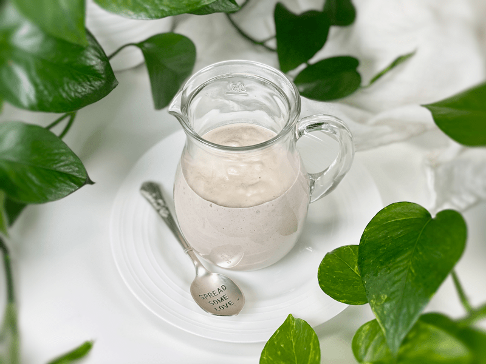
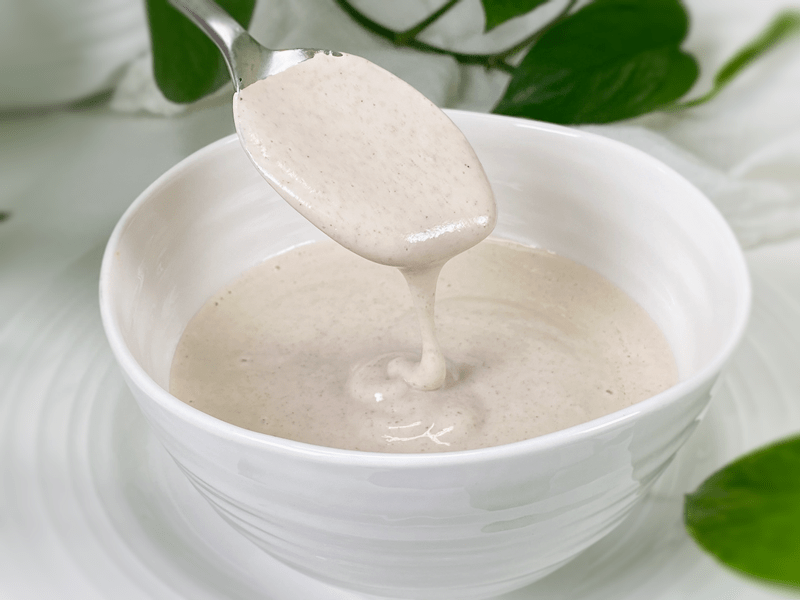
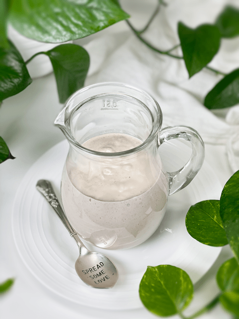

Cinnamon Vanilla Bean Frosting
Cinnamon Vanilla Bean Frosting is the perfect addition to desserts and treats of any kind with its light and fluffy texture, silky cream color, and perfectly sweetened flavor. It is made with simple ingredients that come together quickly and easily. There are many ways that you can flavor it to suit your needs, but it is quite amazing as-is. Often, we see raw frosting using mainly cashews as the base, but I have been trying to create more alkaline recipes, so I used more almonds than cashews this time. It turned out so scrumptious!

The structure of this frosting isn’t suited for being piped onto a cake; it is more like an icing that likes to cascade over the top of cakes, scones, or cookies. If you find yourself with leftover frosting, you can make frozen creamsicles with it. I folded fresh cranberry sauce into the frosting, scooped it into a mold, then froze it for an afternoon delight. Now come on, that’s a pretty cool (no pun intended) idea.
Cashews
- If you have a high-powered blender like a Vitamix, you can skip the soaking process if you are short on time. The main reasons for soaking the cashews (or any nut) are to reduce the phytic acid, which can hinder the absorption of certain nutrients, and to soften them so they blend creamy.
Skinned Almonds
- To achieve the creamy white color, you will need to remove the almond skins after they are finished soaking. If you are new to this process, there is a link below on how to go about it. It’s kind of fun and might be a cool thing to get the kids involved. Just be aware, you will have a few flying almonds.
- Removing the skins also helps with digestion, since they can be an irritant for some people.

Coconut Oil
- Coconut oil plays two different roles in this recipe. It helps to create a silky texture but it also adds a little structure to the frosting, especially because once chilled, it firms up.
- If you don’t like the taste of coconut (which shines through slightly) you can use refined coconut oil, which is neutral in taste or aroma. It isn’t considered raw, so I will leave that up to you.
Sweeteners
- When I designed this recipe, my goal was to use as little sugar as possible. For our household, I used liquid NuNaturals stevia, which I find to be the best tasting.
- If you don’t care for stevia or just don’t have any on hand, you can use 2 tablespoons of maple syrup or any other sweetener. Start with a small amount and taste it, adding more if needed.
I hope you enjoy this raw, vegan frosting. I would love to hear how you use it! blessings, amie sue

Ingredients:
Yields 1 3/4 cups
- 1/2 cup raw cashews, soaked 2+ hours
- 1 cup raw almonds, soaked and skinned
- 1/4 – 1/2 cup water
- 1/4 cup cold-pressed coconut oil, melted
- 1 tsp pure vanilla extract
- 1 vanilla bean pod, scrape out the seeds
- 1/2 tsp liquid stevia or 2 Tbsp liquid sweetener
- 1/2 tsp ground Ceylon cinnamon
- 1/8 tsp Himalayan pink salt
Preparation:
- In a high-speed blender, combine the cashews, almonds, water, coconut oil, vanilla extract/seeds, sweetener, cinnamon, and salt. Blend until creamy and grit-free.
- Start with 1/4 cup of water and add more (up to 1/2 cup) if needed. If you have a high-powered blender and the nuts are soaked well, you may not need as much.
- Depending on the blender, this can take 1-5 minutes. Stop occasionally to scrape down the sides. This is a good time to test the frosting for creaminess.
- You could use all cashews or all almonds… all versions work.
- Use right away, or if the frosting is too soft to apply, place in an airtight container, and put in the fridge to chill.
- This frosting should be good for 5-7 days.
Additional Cake Tips:
- How to frost a cake. Click here.
- How to slice a cake. Click here.
- How much frosting is needed for a cake? Click here.
If you ever have leftover raw frosting, you can make creamy pop cycles from it! I made some today that I mixed with Cranberry and Pomegranate Relish… gotta love leftovers!

© AmieSue.com